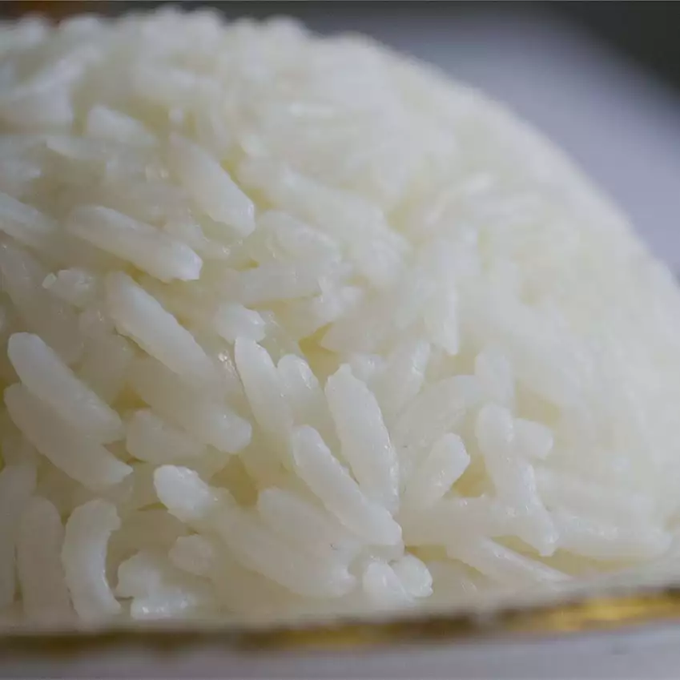

Coconut Rice

Description
Coconut rice...really yummy
Ingredients
- 2 1/2 cups Basmati rice
- 4 (10 ounce) cans coconut milk
- 1 pinch salt
Steps
- In a large saucepan over high heat, combine rice, coconut milk and salt; bring to a boil.
- Reduce heat, cover and simmer for 20 to 25 minutes, or until liquid is absorbed and rice is tender.